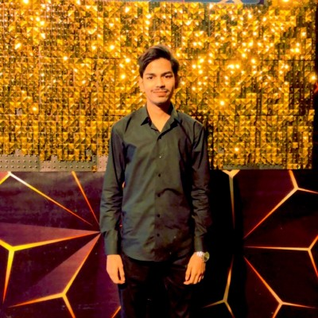

Memorable Experience
One of my most memorable trips was to Kashmir, where I enjoyed serene landscapes, vibrant wildflowers, and peaceful starry nights.

Your Next-Gen Ethical Hacker
This is Muzammil. I am a passionate and driven individual with a strong background in cybersecurity. I thrive on learning new skills and pushing my boundaries to stay updated in my field. Whether it's through my work, studies, or personal projects, I enjoy solving challenges and creating impactful solutions. Outside of my professional interests, I love playing cricket, solving logical problems, and much more.
I aspire to become a professional ethical hacker, securing digital systems and addressing modern cybersecurity challenges with integrity and expertise.
Role Model: Imran Khan
Imran Khan inspires me with his determination, leadership, and dedication to meaningful change, from sports to public service.
One of my most memorable trips was to Kashmir, where I enjoyed serene landscapes, vibrant wildflowers, and peaceful starry nights.